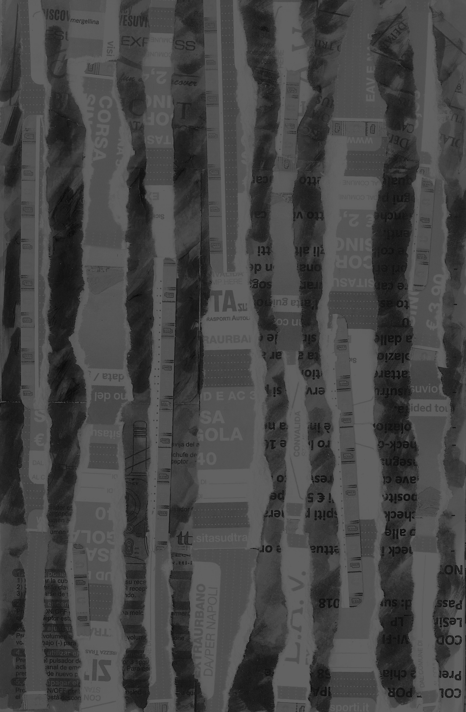

TRANSPORT
Bus Schedule
I'm starting to get nauseous...
I actually have a bag if you need one.
Are you sure?
Yeah, please, take it. It's empty.
Location:
Materials:
Journal entry
After a full day of hiking in the sun, I found myself seated on the last bus back to my hostel in Sorrento next to an American woman fanning herself and complaining of nausea on the windy coastal roads. I carry bags with me everywhere, along with silverware, napkins, pens, and hair ties, since they're ALWAYS useful. All those items have made my life easier at one point or another, but I think this incidence tops the list of moments I was most glad to be prepared. About two minutes after I lent this woman a bag, she pitched over and hurled her whole stomach into it right next to me on this packed bus. Through a pounding headache and heavy revulsion I managed to smile politely and graciously accept her repeated thanks and attempts at small talk.
Bus Schedule
I'm starting to get nauseous...
I actually have a bag if you need one.
Are you sure?
Yeah, please, take it. It's empty.
Location:
Materials:
Journal entry
After a full day of hiking in the sun, I found myself seated on the last bus back to my hostel in Sorrento next to an American woman fanning herself and complaining of nausea on the windy coastal roads. I carry bags with me everywhere, along with silverware, napkins, pens, and hair ties, since they're ALWAYS useful. All those items have made my life easier at one point or another, but I think this incidence tops the list of moments I was most glad to be prepared. About two minutes after I lent this woman a bag, she pitched over and hurled her whole stomach into it right next to me on this packed bus. Through a pounding headache and heavy revulsion I managed to smile politely and graciously accept her repeated thanks and attempts at small talk.
My interest in
and patience for
Italian art history
hits max capacity
about an hour and a half into the lecture
Art History
Location:
Materials:
Journal entry
I thought it would be a breeze to stay awake in art history when you’re actually there in the places seeing the work. Turns out I have never been more mistaken in my life. It’s just the same thing as back home but for three hours and standing up. Granted, some days are more interesting than others, but it’s that drowsy afternoon time slot that’s such a killer and somehow very popular for art history lecturing. At that two hour mark I always seem to lose my ability to care about the symbolism of the 400th life of Mary fresco of the day. At least I’m learning even more firmly that I am not meant to be an art history major. If this can’t engage me then absolutely nothing can.
Negli Estati Uniti il gusto "fiordilatte" non existe.
Davvero?
Prato
Location:
Materials:
Journal entry
This stop-in to a few churches and a textile museum was very short.
I think I may wonder forever
how past generations ever navigated in strange places and foreign lands
without a cellular GPS function

Amalfi Coast
Location:
Materials:
Journal entry
Sometimes, I decide not to take pictures of things when I feel on a whim that they’re sacred. When something is quiet and beautiful and small and touches me in a special way, I want that moment to be just between my memory and that place, no one else. I want to be the only one to snap that moment and turn it into an artifact before it’s lost forever to time. There’s something magical about that to me. The fact that no one, no matter how close to me, will ever know the entirety of my person - they’ll never know every birch tree I’ve fallen in love with for a moment when I caught it illuminated just right in the evening sun. I’m ultimately alone in this city, in the world, in the universe, and there’s nothing more freeing than that idea. This phase of my life is one four-year love note to myself and my independence.
"Che lavoro fai?"
"Sono barista."
"Ti piace?"
"Ma, no, perche infatto è un lavoro…"
"Che ti appassiona?"
"Non lo so, sono barista."
"...Come avete conosciuto?"
20 Hours in Bologna
Location:
Materials:
Journal entry
Tonight I met an Italian boy named Gianluca. His hair was so poofy and his eyes were so kind. He kind of smelled like that incense store I walk past close to SRISA’s main campus with his big white shirt with rolled-up sleeves. He reminded me a bit of Amanda Hearn. Zero sexual chemistry between us. Was it the height difference? His friend looked like my cousin Billy -- they ran into each other in the piazza where people were sitting around drinking in groups on a Wednesday night. They bought a few beers from the guy peddling them and they both rolled their own cigarettes. I couldn’t understand them and stood there feeling strange. “Cazzo” is a popular word confirmed. I denied an offer for a beer and eventually I went back to my hotel.